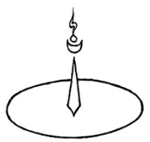

Canales, aires internos y gotas.
La práctica en sí.
Cómo practicar el Mahamudra que es la unión del gozo y la vacuidad.
Exposición del método para generar el poseedor del objeto, el gran gozo espontáneo.
Penetración de los puntos precisos de nuestro propio cuerpo.
Identificación de las diez puertas por donde los aires internos pueden entrar en el canal central.
Para poder meditar en la vacuidad con una mente de gran gozo, el practicante del mantra secreto debe generar el gran gozo espontáneo introduciendo de manera intencionada los aires internos en el canal central a través de cualquiera de las diez puertas por medio de la fuerza de la concentración convergente. El canal central comienza en el entrecejo, desde donde se arquea ascendiendo hasta la coronilla. Desde allí desciende en línea recta hasta la punta del órgano sexual. Las diez puertas son:
- El extremo superior del canal central: el entrecejo.
- El extremo inferior: la punta del órgano sexual.
- El centro de la rueda de canales o chakra de la coronilla: localizado en la cima del cráneo.
- El centro de la rueda de canales de la garganta: localizado cerca de la parte posterior de la garganta.
- El centro de la rueda de canales del corazón: localizado entre los dos pechos.
- El centro de la rueda de canales del ombligo.
- El centro de la rueda de canales del lugar secreto: localizado cuatro dedos por debajo del ombligo.
- El centro de la rueda de canales de la joya: localizado en el centro del órgano sexual, cerca de la punta.
- La rueda del aire: el centro de la rueda de canales de la frente, que tiene seis radios.
- La rueda del fuego: el centro de la rueda de canales situada en el punto medio entre las ruedas de canales de la garganta y del corazón, que tiene tres radios.


Para penetrar los puntos precisos de nuestro cuerpo, debemos concentrarnos en el cuerpo vajra: los canales, los aires internos y las gotas blanca y roja.
Los canales estacionarios.
Hay tres canales principales: el canal central, el canal derecho y el canal izquierdo. El canal central es como la vara de una sombrilla que atraviesa el centro de todas las ruedas de canales y está flanqueado por los canales laterales derecho e izquierdo. Es azul claro por fuera y tiene cuatro atributos: 1) es muy recto, 2) por dentro es de color rojo aceitoso, 3) es muy claro y transparente, 4) es muy suave y flexible; se encuentra exactamente en medio del cuerpo, pero más cerca de la espalda. Justo delante de la espina dorsal está el canal de la vida, que es bastante grueso, y delante de él, el canal central. También recibe el nombre de los dos abandonos porque al reunir los aires internos en este canal abandonamos toda la actividad negativa asociada con los aires de los canales derecho e izquierdo; también se le denomina canal de la mente y Rahu.
El canal derecho es de color rojo, y el izquierdo, blanco. El canal derecho comienza en la entrada del orificio nasal derecho, y el canal izquierdo, en la del izquierdo. A partir de ahí, los dos ascienden en forma de arco hasta la coronilla, uno a cada lado del canal central. Desde la coronilla hasta el ombligo estos tres canales principales se mantienen rectos y adyacentes. Por debajo del ombligo, el canal izquierdo se curva ligeramente hacia la derecha separándose un poco del canal central y volviéndose a unir con él en la punta del órgano sexual, donde realiza la función de retener y expeler el semen, la sangre y la orina. El canal derecho se curva un poco hacia la izquierda por debajo del ombligo y termina en el ano, donde ejerce la función de retener y liberar las heces, etcétera.
El canal derecho también se llama canal solar, canal de la palabra y canal del sostenedor subjetivo, Los aires que fluyen por este canal hacen que se generen las concepciones asociadas a la mente subjetiva. El canal izquierdo también se suele denominar canal lunar, canal del cuerpo y canal del objeto sostenido, los aires internos que fluyen por este canal hacen que se generen las concepciones asociadas al objeto.
Los canales derecho e izquierdo se enroscan al canal central en varios lugares formando nudos de canales. Los cuatro puntos donde se encuentran estos nudos son las ruedas de canales [o chakras] del ombligo, del corazón, de la garganta y de la coronilla. En cada uno de estos lugares, excepto en el corazón, hay un nudo de dos vueltas donde los canales derecho e izquierdo se enroscan al canal central cruzándose por delante y dándole una vuelta. En el chakra del corazón ocurre lo mismo, pero en este lugar hay un nudo de seis vueltas formado por tres vueltas entrecruzadas de cada canal lateral. Estos nudos se producen en cuatro de las seis ruedas de canales principales. En la rueda de canales de la coronilla, la rueda del gran gozo, hay treinta y dos pétalos o radios de canales de color blanco. El centro del chakra es triangular con uno de los vértices apuntando hacia adelante, estos treinta y dos radios se curvan hacia abajo.
| Ubicación | Nombre | Forma del centro | # de radios | Color | Dirección |
|---|---|---|---|---|---|
| Coronilla | Rueda del gran gozo | Triangular | 32 | Blanco | Abajo |
| Garganta | Rueda del deleite | Circular | 16 | Rojo | Arriba |
| Corazón | Rueda del Dharma | Circular | 8 | Blanco | Abajo |
| Ombligo | Rueda de emanación | Triangular | 74 | Rojo | Arriba |
| Lugar secreto | 32 | Rojo | Abajo | ||
| Joya | 8 | Blancos | Arriba |
Los ocho radios o pétalos de la rueda de canales del corazón se encuentran en las direcciones cardinales y en las intermedias, con la parte de delante hacia el este. Por cada radio fluye principalmente el aire que soporta un determinado elemento:
| Dirección | Aire que soporta |
|---|---|
| Este | Elemento tierra |
| Norte | Elemento aire |
| Oeste | Elemento fuego |
| Sur | Elemento agua |
| Sudeste | Elemento de la forma |
| Sudoeste | Elemento del olor |
| Noroeste | Elemento del sabor |
| Nordeste | Elemento del objeto tangible |
De cada uno de estos ocho pétalos o radios de la rueda de canales del corazón se ramifican tres, estos son los canales de los veinticuatro lugares, que se dividen en tres grupos de ocho: los canales de la rueda de la mente, de color azul y que contienen principalmente aires; los de la rueda de la palabra, de color rojo y que contienen principalmente gotas rojas; y los de la rueda del cuerpo, de color blanco y que contienen principalmente gotas blancas. Cada canal se dirige hacia una parte diferente del cuerpo. Estas partes son los veinticuatro lugares internos5. Cada uno de estos veinticuatro canales se ramifica en otros tres. De cada uno de los setenta y dos canales salen otros mil, sumando un total de setenta y dos mil canales.
Los aires internos del cuerpo de una persona ordinaria fluyen por casi todos estos canales excepto por el canal central. Debido a que estos aires internos son impuros, las mentes que los montan también lo son, y mientras estos aires internos continúen fluyendo por los canales secundarios, sustentarán las diversas concepciones negativas que nos mantienen atrapados en el samsara. Podemos hacer que estos aires entren en el canal central, donde ya no podrán sostener la generación de las concepciones burdas de apariencias duales. Con una mente libre de apariencias duales, podremos alcanzar una realización directa de la vacuidad.
Los aires internos que fluyen.
Los aires internos se conocen como aires fluyentes o de movimiento porque fluyen por los canales6.
| Aire | Que sustenta la vida | Descendente evacuador | Ascendente movedor | Que permanece por igual | Que lo impregna todo |
|---|---|---|---|---|---|
| Color | Blanco | Amarillo | Rojo | Verde / Amarillo | Azul claro |
| Familia de Buda | Akshobya | Ratnasambhava | Amitabha | Amoghasiddhi | Vairochana |
| Elemento | Agua | Tierra | Fuego | Aire | Espacio |
| Ubicación | El corazón | Las dos puertas interiores: ano y órgano sexual | La garganta | El ombligo | Las partes superiores e inferiores del cuerpo, principalmente las 360 articulaciones |
| Función | Sustentar y mantener la vida | Retener y expulsar la orina, las heces, el esperma, la sangre, etc. | Hablar, tragar, etc. | Hacer que el fuego interno se encienda, digerir los alimentos, bebidas, etc. | Permitir que el cuerpo se desplace; permitir el movimiento, y poder levantar y colocar objetos |
| Dirección | Por los orificios nasales, suavemente hacia abajo | Por los orificios nasales, horizontalmente, con fuerza hacia adelante | Por el orificio nasal derecho, violentamente hacia arriba | Por el orificio nasal izquierdo, moviéndose hacia la izquierda y derecha desde el borde de este orificio | Este aire no fluye por los orificios nasales excepto en el momento de la muerte |
| Responsable de | Incremento de la sangre, esperma y otros fluidos del cuerpo | Crecimiento de huesos, dientes uñas | Incremento del calor corporal | Aumento del flujo del elemento aire a través de los canales | Incremento en el tamaño de los espacios internos y las cavidades del cuerpo (crecimiento) |
Los cinco aires secundarios surgen del aire que sustenta la vida y fluyen hacia la puerta de un poder sensorial particular.
| Aire | Color | Función |
|---|---|---|
| Movedor | Rojo | Permitir que la percepción visual se desplace hacia las formas visuales |
| De intenso movimiento | Azul | Permitir que la percepción auditiva se desplace hacia los sonidos |
| De perfecto movimiento | Amarillo | Permitir que la percepción olfativa se desplace hacia los olores |
| De fuerte movimiento | Blanco | Permitir que la percepción gustativa se desplace hacia los sabores |
| De definitivo movimiento | Verde | Permitir que la percepción corporal se desplace hacia los objetos tangibles |
El aire que sustenta la vida tiene tres niveles: burdo, sutil y muy sutil. El aire muy sutil (o indestructible) viaja de una vida a otra, y soporta la mente muy sutil, de la cual nunca se separa. Está ubicado en una cavidad muy pequeña dentro del canal central en el centro de la rueda de canales del corazón, encapsulado en el centro de una pequeña esfera, la gota indestructible, que está formada por las gotas blanca y roja muy sutiles.
Las gotas contenidas
Las gotas blancas (esencia pura del fluido seminal blanco) y las rojas (esencia pura de la sangre) pueden ser burdas o sutiles. Las gotas blancas y rojas que fluyen fuera del canal central son gotas burdas. Dentro del canal central hay gotas burdas y gotas sutiles. La sede principal de la gota blanca (bodhichita blanca), es la rueda de canales de la coronilla, donde se origina el fluido seminal blanco. La sede principal de la gota roja (bodhichita roja) es la rueda de canales del ombligo, donde se origina la sangre. La gota roja en el ombligo es la fuente del calor del cuerpo y la base para alcanzar las realizaciones del fuego interno o tummo. Cuando las gotas se derriten y fluyen por los canales producen una experiencia de gozo.
Para practicar el tantra del yoga supremo hemos de ser un humano, nacido del seno materno, que posee seis elementos: tierra, agua, fuego, aire, canales y gotas; o, según otra manera de enumerarlos: hueso, médula y gotas blancas obtenidos del padre, y carne, piel y sangre, obtenidas de la madre.
La razón por la que los aires internos pueden entrar en el canal central mediante la penetración de los puntos precisos de estas puertas.
Para introducir los aires internos en el canal central, debemos practicar meditaciones que enfoquen nuestra concentración en cualquiera de las diez puertas por donde los aires internos pueden entrar en el canal central. Según el sistema que se presenta en los seis yogas de Naropa, los aires entran en el canal central a través de la puerta de la rueda de canales del ombligo. Esta es también la puerta que se utiliza en el presente sistema de meditación del Mahamudra. Hay una cavidad similar a una burbuja de aire, en el nudo del canal central del ombligo, en el centro de la rueda de canales del ombligo (rueda de emanación). Esta cavidad es el punto que se penetra cuando se medita en el fuego interno o tummo. Nos concentramos en esta cavidad y visualizamos una AH-corta en su interior (esto es penetrar el punto preciso de la rueda de canales del ombligo del cuerpo vajra). Si meditamos en que nuestra mente se ha fundido de manera indistinguible con la AH-corta y practicamos esta meditación una y otra vez con concentración firme y estable, tendremos éxito en introducir los aires internos en el canal central en este punto.

Los aires internos que sirven de montura y las mentes que los montan son inseparables, por lo tanto si la mente se absorbe en la cavidad dentro del canal central, los aires internos también lo harán. Una práctica firme y constante de esta meditación hará que el canal central se abra de manera gradual. Esto explica cómo introducir los aires internos en el canal central a través de la rueda de canales del ombligo, y del mismo modo podemos comprender cómo pueden entrar por cualquiera de las otras nueve puertas. Es de suma importancia ser muy precisos al penetrar estos puntos, identificar su ubicación exacta. Un método rápido para reunir los aires internos en el canal central es practicar la penetración de los puntos precisos al mismo tiempo que sostenemos la respiración del vaso. Cuando los aires internos están dentro del canal central, no se sustentan los pensamientos conceptuales burdos que interfieren con la concentración convergente y la dispersan.
Exposición de sus diferentes funciones.
En la etapa de consumación, la penetración de cada rueda de canales ejerce una función diferente, penetrar:
- La rueda de canales de la coronilla aumenta las gotas blancas
- La rueda de canales de la garganta hace que las prácticas del sueño sean muy poderosas
- La rueda de canales del corazón nos permite mantener la apariencia de la luz clara
- La rueda de canales del ombligo incrementa el fuego interno
- La rueda de canales del lugar secreto induce una experiencia de gozo intenso
- La rueda de canales en la punta del órgano sexual incrementa la experiencia de gozo intenso e induce un sueño rápido, profundo y largo.
Practicar la etapa de consumación durante el dormir nos prepara para ser capaces de practicarla durante el proceso de la muerte, que es el momento más importante de hacerlo. Al morir debemos ser capaces de practicar las tres transformaciones. Para tener éxito en ellas hemos de prepararnos adiestrándonos en las prácticas de la etapa de consumación que transforman la luz clara del dormir en el camino del Cuerpo de la Verdad, el sueño en el camino del Cuerpo de Deleite y el despertar en el camino del Cuerpo de Emanación.